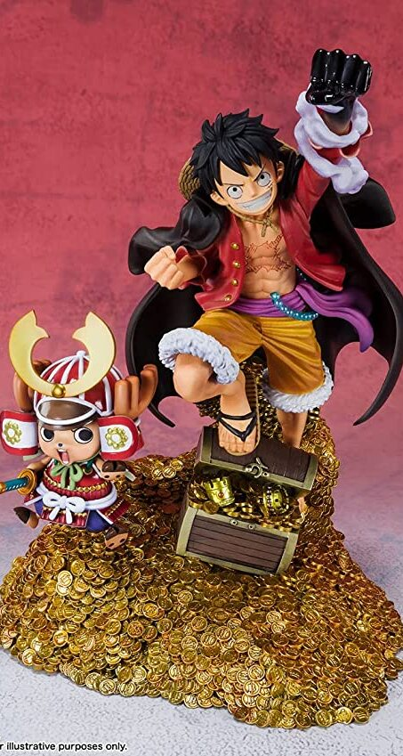

Exclusive One Piece Figurines

Tamashi Nations - One Piece - Monkey D. Luffy - WT100 Commemorative Eiichiro Oda Illustration DAIKAIZOKU HYAKKEI, Bandai Spirits Figuarts Zero
FEATURES
- Theme: Anime
- Anime: One Piece
- Brand: TAMASHII NATIONS
- Item Dimensions (L x W x H): 5.75 x 4.5 x 7.5 inches
- Material: Acrylonitrile Butadiene Styrene
- Collection Name: Monkey D.Luffy
- Watch Product Review
ABOUT THIS ITEM
- Based on the dynamic WT100 Illustration by Eiichiro Oda commemorating Monkey D. Luffy
- They're high-impact distillations of the One Piece world, finished with gorgeous effects.
- The set includes the figure and a stand.
- This landed the number-one spot in the first global One Piece Character World Popularity Vote "WORLD TOP 100"
- Monkey D. Luffy joins Figuarts ZERO in a special new size of approximately 7.5" tall, and includes a mini Chopper figure
- Only product with affixed official Bluefin and Bandai Namco label has been thoroughly tested for safety and meets all North American consumer product safety regulations and entitles the purchaser to product support assistance
PRICE : RM 109.99